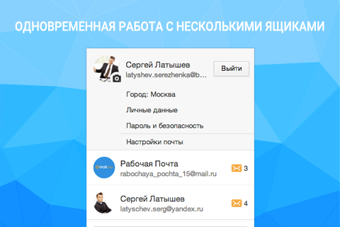
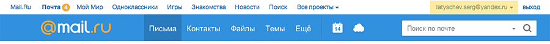
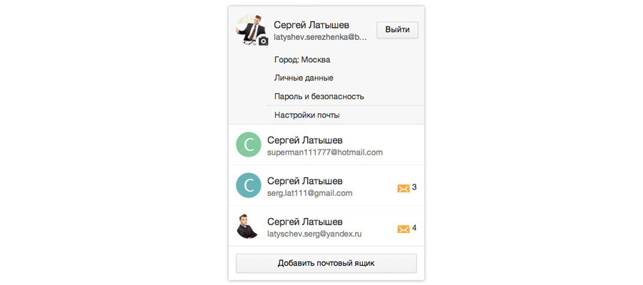
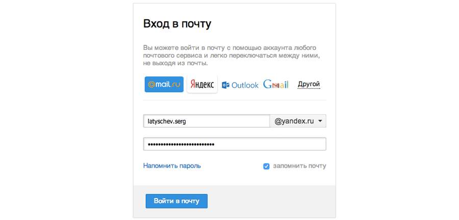
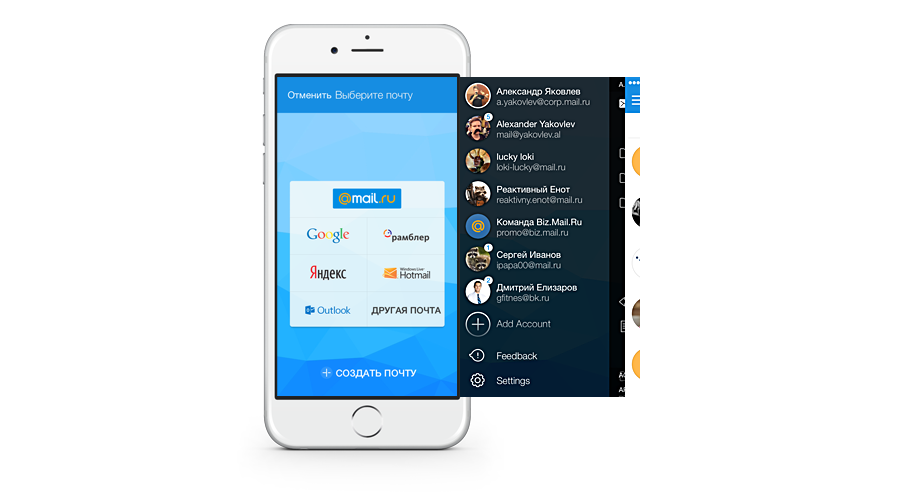

|
Блог почты
Последние события из жизни Почты, Календаря и Облака Mail.Ru
|
Мультиавторизация в Почте Mail.Ru

Наш недавний опрос показал, что каждый третий пользователь Почты Mail.Ru заводит несколько ящиков для различных целей: для работы, личный, а также для регистрации на различных сайтах и сервисах.
Если вы являетесь владельцем сразу нескольких адресов, вам не нужно постоянно нажимать кнопку «Выход» и заново вводить логин и пароль, чтобы работать с несколькими ящиками. Достаточно просто авторизоваться во всех своих почтовых аккаунтах один раз. После этого вы сможете переключаться между ними в один клик.
Как это работает?
Мультиавторизация доступна всем пользователям в интерфейсе Почты Mail.Ru. Переключиться между ящиками и добавить новый аккаунт можно в верхнем правом углу интерфейса. Для этого нажмите на адрес вашего текущего ящика.


Кликните на иконку сервиса, на котором у вас расположен ящик или нажмите «Другой», если в предложенных вашего сервиса нет. Введите полное имя почтового ящика (логин и домен) или выберите необходимый домен в выпадающем списке, а также укажите пароль для входа в почтовый ящик. Установите галочку напротив «запомнить», чтобы не вводить пароли каждый раз при переходе из одного ящика в другой, и нажмите «Войти».

Благодаря мультиавторизации вы можете работать одновременно с 10 ящиками, а также открывать в каждой отдельной вкладке нужный вам аккаунт.
Мультиавторизация на мобильных устройствах
Мультиавторизация доступна и в официальных мобильных приложениях Почты Mail.Ru для iOS и Android, а также в Touch-версии сервиса.

Так же, как и в веб-версии Почты вы можете быстро переключаться одновременно между 10 ящиками.
Если у вас еще остались о работе мультиавторизации, отвечаем на них в видеоролике:
Вы также можете пользоваться Почтой, Облаком и другими проектами Mail.Ru, даже если ваш ящик находится на другом сервисе. Подробности здесь.